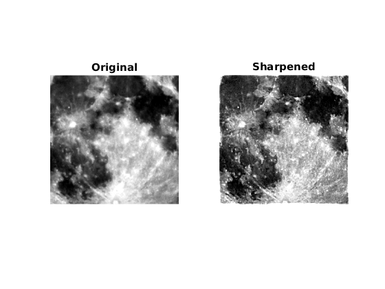
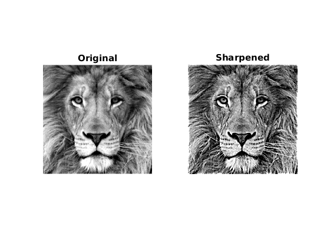

Contents
Inferences
We found that after a certain point, increasing sigma and scale (like making scale too large, or scale too large) makes the image less useful. For example, increasing the scale beyond a large quantity makes the image "black-and-white" because of the huge jumps made by the DoG of the image. Keeping the scale as 2, and sigma as 5, we get satisfactory results for both the images.
MyMainScript
tic;
Image Sharpening
img1 = load('../data/superMoonCrop.mat'); img2 = load('../data/lionCrop.mat'); img1 = img1.imageOrig; img2 = img2.imageOrig; % window size used is 25x25 % scale is 2 % sigma for the gaussian applied is 5 myUnsharpMasking(img1); myUnsharpMasking(img2); toc;
Elapsed time is 0.591935 seconds.
Code for Unsharp masking
function myUnsharpMasking( img ) %myUnsharpMasking - Function to implement unsharped masking % Formula:- Output = F + s(F-F*G) hwindow = 12; scale = 2; sigma = 5; G = fspecial('gaussian', [2*hwindow+1 2*hwindow+1], sigma); conv= imfilter(img,G); fimg = img + scale*(img-conv); % for linear contrast stretching of both the images % Using the regular formula(as commented) gave darker images hence have used the % matlab function imadjust for contrast stretching. % min1 = min(min(img)); % max1 = max(max(img)); % img1 = (img-min1)/(max1-min1); % min2 = min(min(fimg)); % max2 = max(max(fimg)); % fimg1 = (fimg-min2)/(max2-min2); img1 = imadjust(img,stretchlim(img),[]); fimg1 = imadjust(fimg,stretchlim(fimg),[]); % Displaying the original and the sharpened images figure; subplot(1,2,1); imshow((img1)); colormap('Gray'); title('Original'); colorbar; subplot(1,2,2); imshow((fimg1)); colormap('Gray'); title('Sharpened'); colorbar; end

